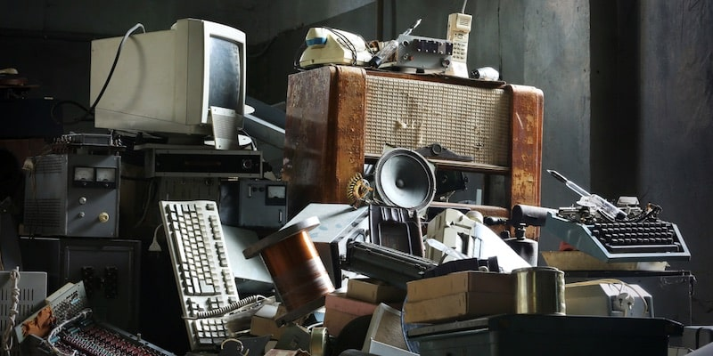
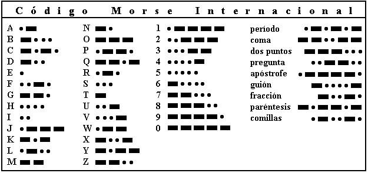
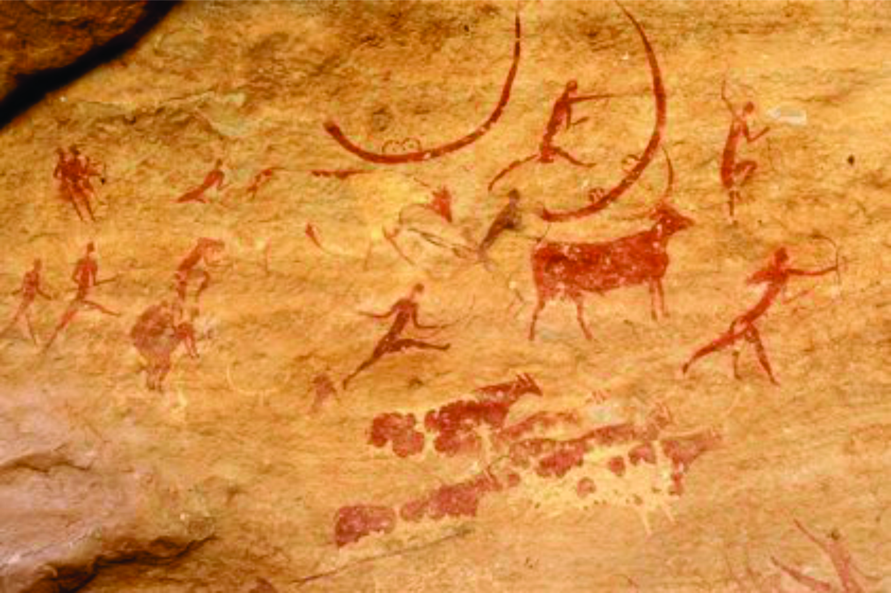
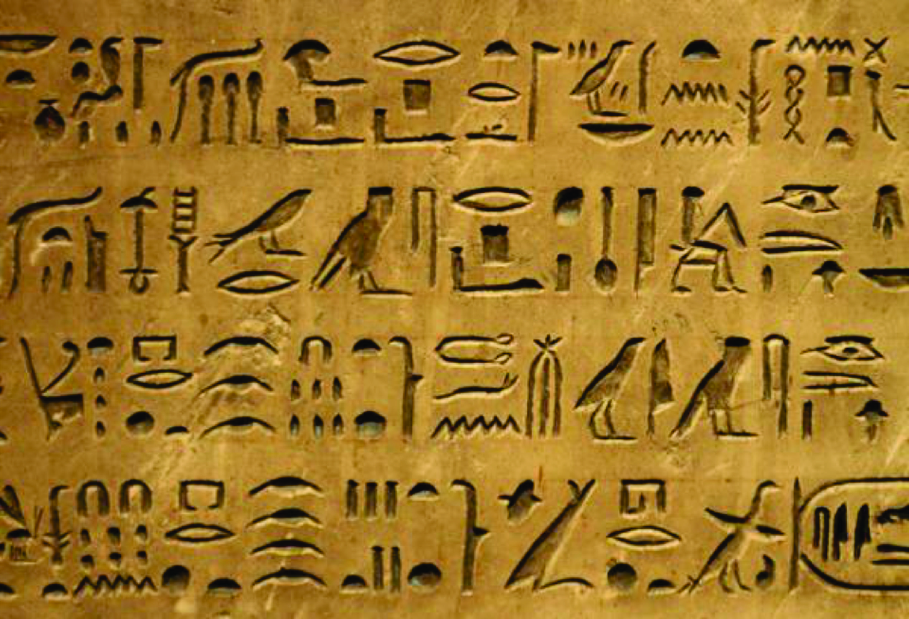
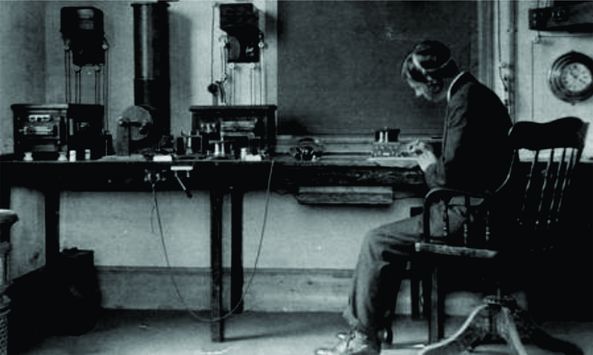
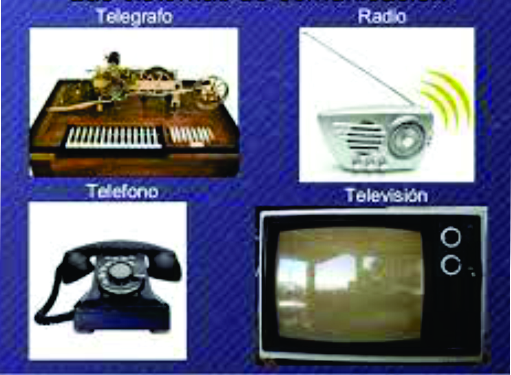
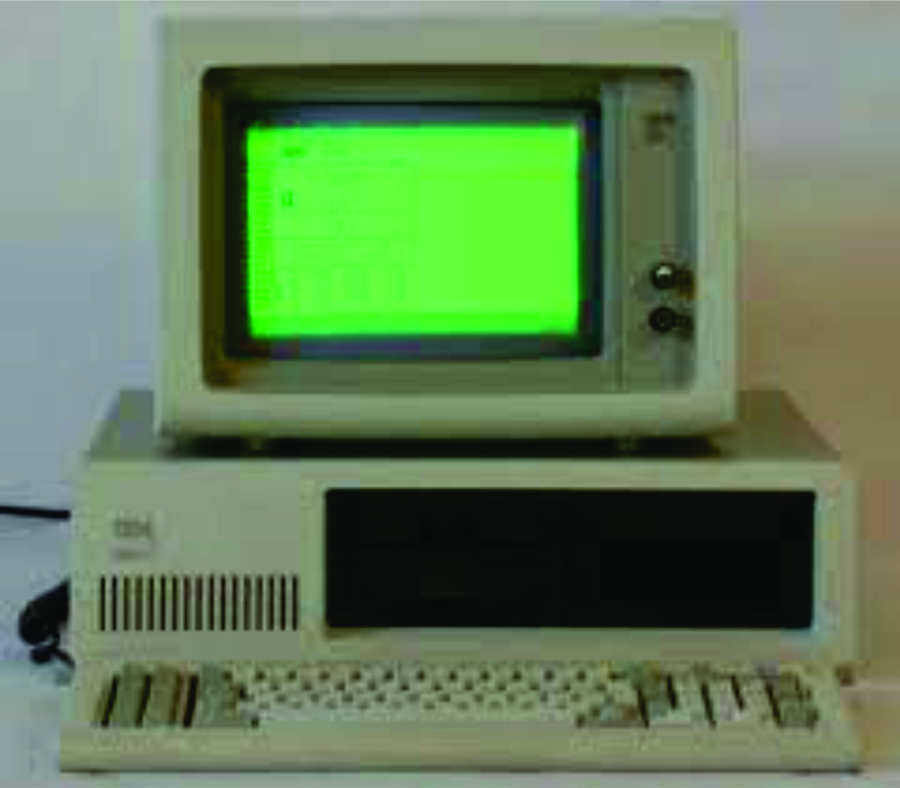

Los objetos tecnológicos o artefactos tecnológicos son los dispositivos, aparatos y herramientas que el ser humano ha diseñado y desarrollado a lo largo de la historia, con el propósito de hacer frente a una necesidad
Cada objeto tecnológico es diseñado con un propósito o una función específicos, que en general buscan remediar las limitaciones del cuerpo y la mente humanos. Así, por ejemplo, un termómetro permite medir la temperatura corporal con precisión, una cámara fotográfica permite capturar imágenes en un formato electrónico de datos y una licuadora permite cortar y triturar los alimentos para diferentes preparaciones. Todos estos son ejemplos de artefactos tecnológicos cotidianos.
Los objetos tecnológicos se llaman así porque son fruto de la aplicación de la tecnología, esto es, de una combinación de ciencia y técnica que permite descubrir y manejar nuevos materiales y controlar hasta cierto punto las fuerzas naturales. Por lo tanto, cada objeto tecnológico consta de materiales específicos dispuestos de forma determinada, de modo de formar componentes funcionales, como son las resistencias, las baterías, los resortes, los conductos, entre muchos otros.
El código Morse es un ejemplo de lenguaje binario, similar al que usan los ordenadores. Se representa el alfabeto mediante dos signos (punto, raya) de manera que, conociendo la representación de cada elemento del alfabeto, es posible comunicarse mediante secuencias ordenadas de puntos y rayas.
El artista estadounidense Samuel F. B. Morse, el físico estadounidense Joseph Henry, y el ingeniero mecánico Alfred Vail desarrollaron un sistema de telégrafo eléctrico. Necesitaba un método para transmitir el lenguaje natural utilizando solo pulsos eléctricos y el silencio entre ellos. Alrededor de 1837, Morse, por lo tanto, desarrolló un precursor temprano del código Morse Internacional moderno.5: 79 El sistema Morse para telegrafía, que fue utilizado por primera vez en 1844, fue diseñado para hacer huecos en una cinta de papel cuando se recibieron corrientes eléctricas. El receptor de telégrafos original de Morse usaba un reloj mecánico para mover una cinta de papel. Cuando se recibía una corriente eléctrica, un electroimán empujaba una armadura que empujaba un lápiz sobre la cinta de papel en movimiento, haciendo una sangría en la cinta. Cuando la corriente se interrumpía, un resorte retiraba el lápiz y esa parte de la cinta móvil permanecía sin marcar. El código Morse fue desarrollado para que los operadores pudieran traducir las sangrías marcadas en la cinta de papel en mensajes de texto.
A través de la historia nos podemos dar cuenta de que la comunicación ha ido evolucionando de una manera extraordinaria. Actualmente, las nuevas herramientas de comunicación basadas en las Tecnologías de la Información y Comunicación nos ayudan a hacer más visual, atractivo, llamativo y fugaz de lo que queremos decir y expresar. ¿Cómo ha evolucionado la comunicación? La comunicación humana surgió propiamente con el nacimiento del ser humano, ya que es una de las capacidades naturales. No existe un hito o una fecha en la que podamos marcar el inicio de la comunicación de nuestra especie, pero sí podemos trazar un recorrido de las tecnologías las cuales ayudaron a facilitar el hecho comunicativo. La primera forma de comunicación humana es el lenguaje, del cual se estima que la comunicación verbal humana se inició con el Homo Sapiens hace 2.5 millones de años. La forma de comunicación de la época eran las pinturas rupestres, las cuales nos proporcionan pistas sobre cómo evolucionó nuestra capacidad de desarrollar un lenguaje multifacético. Por ello, se dice que el Homo Sapiens era un ser simbólico y con el que más adelante se desarrolló la comunicación.
Posteriormente aparecen los pictogramas, hace referencia a un formato previo a la escritura. Con la llegada de los sumerios, esta técnica es conocida como la escritura cuneiforme, mientras que los egipcios desarrollaron la escritura jeroglífica caracterizada por un vínculo formal entre la representación y lo representado.
Con los egipcios ya aparecía el correo postal, aunque existen evidencias científicas de que los otras civilizaciones como la persa, China, India y Roma ya la empleaban. Las comunicaciones que utilizaban este sistema podían ser largamente esperadas, aunque a partir de la invención de la máquina de vapor, fue mucho más fácil llevar más cantidad de cartas y más rápido a sus destinatarios. Este modelo fue reemplazado a finales del siglo XX con el e-mail o correo electrónico.
Por otro lado, con los adelantos tecnológicos de la Revolución Industrial se abrió un nuevo espectro en la captura y reproducción de imágenes, imágenes en movimiento y sonidos. Así mismo, a partir del siglo XIX la humanidad comenzó a inundar poco a poco el espectro electromagnético con ondas de radio, o sea, ondas electromagnéticas de un espectro distinto al de la luz visible, para enviar y recibir información.
Gracias a esta gran revolución surgieron nuevos inventos comunicativos a lo largo del siglo XIX y XX. Estos son el telégrafo, el teléfono, la radio, la televisión, entre otros. Con el teléfono se hizo posible la creación de una comunicación más eficaz.
Ya en el siglo XX comenzaba la conocida Revolución Digital la cual trajo consigo muchos cambios importantes en la comunicación humana y empresarial. Nacieron las computadoras, máquinas capaces de recibir, almacenar o transmitir volúmenes de información mucho más grandes y a velocidades mucho más altas que cualquier otro invento previo del ser humano. En 1969 fue en realidad cuando empezó una verdadera revolución digital que iba de la mano de la evolución de la comunicación a través de este nuevo descubrimiento. Primero con la WWW (World Wide Web) que no era más que un sistema de hipertexto enlazado y accesible a través de internet.
